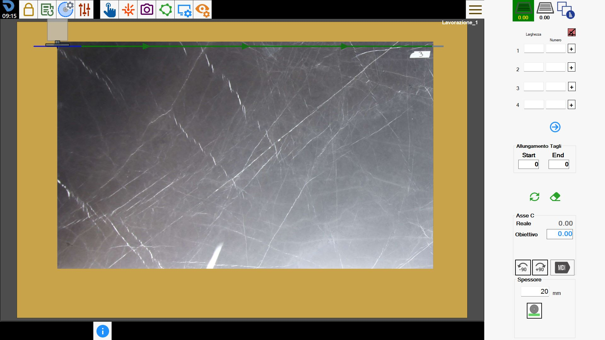
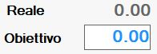

Mit dieser Funktion können Mehrfachschnitte hinzugefügt werden.
Diese besondere Schnittart ermöglicht die Erstellung einer Reihe paralleler Schnitte innerhalb derselben Gruppe. Es können zwei Gruppen mit jeweils separat einstellbarer Richtung angelegt werden.
Die Benutzeroberfläche sieht ähnlich wie folgt aus:

Seitenleiste
Auswahl und Verwaltung der Schnittgruppen
 | Erste Schnittgruppe erstellen |
| Zweite Schnittgruppe erstellen |
Schnittverwaltung |
Schnittparameter
Für jede der beiden dem Bediener zur Verfügung stehenden Schnittgruppen können bis zu 100 gleichzeitige Schnittkonfigurationen mit den jeweiligen Parametern eingegeben werden.
 | Orthogonale Richtungen |
Höhe | Der Abstand zwischen zwei Schnitten. |
Anzahl | Anzahl der zu erstellenden parallelen Schnitte. |
 | Schnittposition |
 | Nächste/vorherige Schnitte anzeigen |
Schnitte verlängern
Der Bediener kann alle Schnitte der ersten und zweiten Gruppe am Anfang oder Ende um das eingestellte Maß verlängern.
 | Start |
 | End |
Schnitte löschen und aktualisieren
 | Schnitte löschen |
 | Schnitte aktualisieren |
Achse C
Der Maschinenkopf kann gedreht werden, um die Ausrichtung der Schnitte sowohl der ersten als auch der zweiten Gruppe einzustellen.
 | _90 drehen |
 | -90 drehen |
 | Maschinenkopfdrehung |
 | MDI |
Dicke
Der Bediener kann die Stärke der zu schneidenden Platte festlegen.
 | Manuelle Stärke |
 | Stärke mit Maschine |
Ausführung der Bearbeitung
Der Bediener kann beide Schnittgruppen durch Ändern der jeweiligen Parameter einstellen.
Sobald das gewünschte Ergebnis erreicht ist, kann die Schaltfläche „Zyklus starten“ gedrückt werden, um die Bearbeitung auszuführen.
Erste Schnittgruppe
In der ersten Schnittgruppe werden eine oder mehrere Schnittgruppen durch Ändern der Parameter Breite, Anzahl und Schnittposition sowie der Drehung der C-Achse definiert.
Bei der folgenden Bearbeitung wurden Schnitte parallel zur aktuellen Maschinenposition eingestellt.

Zweite Schnittgruppe
Wie bei der ersten Schnittgruppe können auch bei der zweiten die Parameter geändert werden, um das gewünschte Ergebnis zu erzielen.
Bei dieser Bearbeitung wurde die Schnittrichtung geändert und es wurden Schnitte orthogonal zu denen der ersten Gruppe ausgeführt.

Optimierung und Verwaltung der Schnitte
In diesem Bereich kann die Ausführungsreihenfolge der Schnitte geändert und festgelegt werden, ob ein Schnitt ausgeführt werden soll.